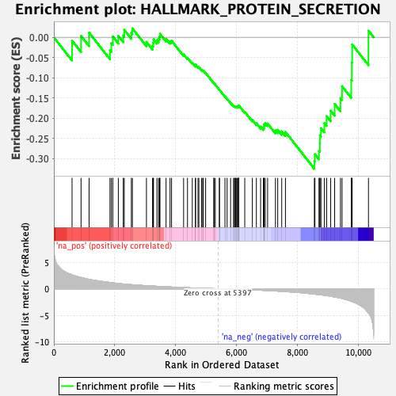
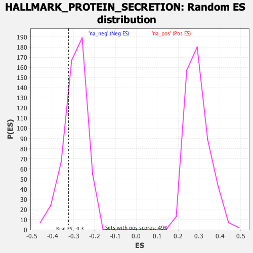

| Dataset | qlf.KOd4vsWTd4_gsea_score |
| Phenotype | NoPhenotypeAvailable |
| Upregulated in class | na_neg |
| GeneSet | HALLMARK_PROTEIN_SECRETION |
| Enrichment Score (ES) | -0.3250141 |
| Normalized Enrichment Score (NES) | -1.1101514 |
| Nominal p-value | 0.23772103 |
| FDR q-value | 0.3592666 |
| FWER p-Value | 0.999 |

| SYMBOL | RANK IN GENE LIST | RANK METRIC SCORE | RUNNING ES | CORE ENRICHMENT | |
|---|---|---|---|---|---|
| 1 | ATP7A | 598 | 2.623 | -0.0082 | No |
| 2 | LMAN1 | 893 | 2.133 | 0.0035 | No |
| 3 | TMX1 | 1157 | 1.773 | 0.0114 | No |
| 4 | ATP1A1 | 1843 | 1.190 | -0.0320 | No |
| 5 | ABCA1 | 1889 | 1.160 | -0.0146 | No |
| 6 | SEC31A | 1937 | 1.123 | 0.0019 | No |
| 7 | RAB14 | 2118 | 0.997 | 0.0033 | No |
| 8 | ARF1 | 2281 | 0.907 | 0.0048 | No |
| 9 | IGF2R | 2313 | 0.889 | 0.0184 | No |
| 10 | TMED10 | 2547 | 0.782 | 0.0107 | No |
| 11 | SOD1 | 2580 | 0.764 | 0.0220 | No |
| 12 | ARFGEF1 | 3042 | 0.581 | -0.0114 | No |
| 13 | AP1G1 | 3243 | 0.512 | -0.0210 | No |
| 14 | KIF1B | 3266 | 0.503 | -0.0137 | No |
| 15 | SEC22B | 3274 | 0.500 | -0.0050 | No |
| 16 | ARCN1 | 3387 | 0.466 | -0.0070 | No |
| 17 | ARFIP1 | 3442 | 0.449 | -0.0038 | No |
| 18 | RAB22A | 3473 | 0.437 | 0.0015 | No |
| 19 | STAM | 3487 | 0.434 | 0.0084 | No |
| 20 | STX12 | 3686 | 0.373 | -0.0036 | No |
| 21 | TMED2 | 3817 | 0.338 | -0.0097 | No |
| 22 | MAPK1 | 3867 | 0.325 | -0.0084 | No |
| 23 | YIPF6 | 4263 | 0.224 | -0.0420 | No |
| 24 | RAB2A | 4391 | 0.196 | -0.0506 | No |
| 25 | COG2 | 4549 | 0.155 | -0.0627 | No |
| 26 | USO1 | 4653 | 0.135 | -0.0701 | No |
| 27 | VAMP3 | 4654 | 0.134 | -0.0676 | No |
| 28 | AP2B1 | 4737 | 0.116 | -0.0732 | No |
| 29 | CLTC | 4764 | 0.112 | -0.0736 | No |
| 30 | GNAS | 4855 | 0.095 | -0.0805 | No |
| 31 | RER1 | 4892 | 0.089 | -0.0823 | No |
| 32 | COPE | 4910 | 0.087 | -0.0823 | No |
| 33 | BNIP3 | 4987 | 0.072 | -0.0882 | No |
| 34 | ADAM10 | 5255 | 0.027 | -0.1133 | No |
| 35 | RAB5A | 5263 | 0.026 | -0.1135 | No |
| 36 | COPB1 | 5303 | 0.018 | -0.1169 | No |
| 37 | DNM1L | 5439 | -0.006 | -0.1297 | No |
| 38 | AP2M1 | 5441 | -0.007 | -0.1297 | No |
| 39 | TSG101 | 5622 | -0.035 | -0.1463 | No |
| 40 | ERGIC3 | 5693 | -0.045 | -0.1521 | No |
| 41 | ZW10 | 5807 | -0.065 | -0.1617 | No |
| 42 | M6PR | 5903 | -0.081 | -0.1693 | No |
| 43 | ANP32E | 5932 | -0.085 | -0.1704 | No |
| 44 | STX7 | 5954 | -0.089 | -0.1708 | No |
| 45 | MON2 | 5970 | -0.092 | -0.1705 | No |
| 46 | VPS4B | 5991 | -0.096 | -0.1706 | No |
| 47 | GOSR2 | 6027 | -0.102 | -0.1721 | No |
| 48 | NAPA | 6036 | -0.104 | -0.1709 | No |
| 49 | BET1 | 6068 | -0.109 | -0.1718 | No |
| 50 | COPB2 | 6072 | -0.110 | -0.1701 | No |
| 51 | ATP6V1H | 6074 | -0.110 | -0.1681 | No |
| 52 | CLCN3 | 6272 | -0.149 | -0.1842 | No |
| 53 | SCAMP1 | 6522 | -0.204 | -0.2042 | No |
| 54 | SNAP23 | 6654 | -0.236 | -0.2124 | No |
| 55 | CTSC | 6793 | -0.271 | -0.2205 | No |
| 56 | GBF1 | 6884 | -0.297 | -0.2236 | No |
| 57 | GLA | 6905 | -0.303 | -0.2199 | No |
| 58 | ARFGAP3 | 6910 | -0.304 | -0.2146 | No |
| 59 | YKT6 | 6946 | -0.314 | -0.2121 | No |
| 60 | GOLGA4 | 7023 | -0.336 | -0.2131 | No |
| 61 | CLTA | 7281 | -0.408 | -0.2301 | No |
| 62 | AP2S1 | 7355 | -0.438 | -0.2289 | No |
| 63 | DST | 7487 | -0.486 | -0.2323 | No |
| 64 | RPS6KA3 | 7609 | -0.530 | -0.2340 | No |
| 65 | VPS45 | 8559 | -1.007 | -0.3062 | Yes |
| 66 | TPD52 | 8578 | -1.015 | -0.2889 | Yes |
| 67 | NAPG | 8711 | -1.095 | -0.2810 | Yes |
| 68 | VAMP4 | 8739 | -1.111 | -0.2628 | Yes |
| 69 | ARFGEF2 | 8741 | -1.113 | -0.2421 | Yes |
| 70 | STX16 | 8777 | -1.131 | -0.2243 | Yes |
| 71 | SCAMP3 | 8889 | -1.226 | -0.2120 | Yes |
| 72 | CLN5 | 8962 | -1.285 | -0.1949 | Yes |
| 73 | OCRL | 9096 | -1.402 | -0.1814 | Yes |
| 74 | SEC24D | 9226 | -1.549 | -0.1647 | Yes |
| 75 | LAMP2 | 9417 | -1.749 | -0.1502 | Yes |
| 76 | PPT1 | 9469 | -1.829 | -0.1209 | Yes |
| 77 | AP3S1 | 9771 | -2.367 | -0.1055 | Yes |
| 78 | AP3B1 | 9791 | -2.408 | -0.0622 | Yes |
| 79 | SGMS1 | 9801 | -2.435 | -0.0175 | Yes |
| 80 | SNX2 | 10337 | -4.554 | 0.0164 | Yes |
